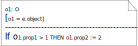

Information and Process Modeling for Simulation – Part II
This tutorial article is Part II of a series of three articles starting with Information and Process Modeling for Simulation – Part I: Objects and Events.
Copyright © 2019-2020 Gerd Wagner (CC BY-NC)
Published 2020-01-21. Also available as PDF.
Abstract
This article (1) reports new research results in the area of business process modeling and simulation, and (2) shows, in the style of a tutorial, how to use UML Class Diagrams and DPMN Process Diagrams for modeling Activities and Processing Networks. The state structure of a system is captured by a UML Class Diagram, which defines the types of objects, events and activities underlying a DPMN Process Diagram that captures the dynamics of the system in the form of a set of event rules. Part I of the tutorial presents the Object Event Modeling (OEM) paradigm and a basic OEM approach for modeling discrete event simulations based on Objects and Events with UML Class Diagrams and DPMN Process Diagrams. In this second part, the basic OEM approach is extended by considering Activities and Processing Networks. Part III will show how to add the modeling concepts of Agents with Perceptions, Actions and Beliefs, resulting in a general agent-based Discrete Event Simulation modeling framework.
Table of Contents
List of Figures
- 1-1. A conceptual information model of a manufacturing workstation system
- 1-2. A conceptual process model of a manufacturing workstation system
- 1-3. An information design model
- 1-4. A process design model in the form of a DPMN Process Diagram
- 1-5. An ontology of the core categories of individuals of the OEM&S paradigm
- 1-6. A model of the core classes of individuals an OE simulator has to deal with at runtime.
- 2-1. Introducing an activity type in a conceptual information model of a single workstation system.
- 2-2. Introducing an activity type in a conceptual process model of a single workstation system.
- 2-3. Going from basic OEM to OEM-A class models by introducing activity types.
- 2-4. Going from basic DPMN to DPMN-A process models by introducing Activity rectangles.
- 2-5. Allocating and re-allocating the workstation as a resource of Processing activities
- 3-1. The resources required for performing an activity include the activity's performer.
- 3-2. Activity types may have special properties representing resource roles.
- 3-3. A conceptual information model of the activity type "examinations" with resource roles.
- 3-4. Adding two resource pools for medical departments.
- 3-5. A conceptual process model based on the information model of Figure 3-4.
- 3-6. A conceptual information model with doctors and patients as people.
- 3-7. Adding the activity type "walks to room" to the conceptual information model.
- 3-8. A conceptual process model based on the information model of Figure 3-7.
- 3-9. An improved process model based on the information model of Figure 3-7.
- 3-10. Displaying the process owner and activity performers in a conceptual process model.
- 3-11. Adding parallel participation multiplicities for rooms participating both in walks and examinations at the same time.
- 3-12. An information model for the simplified design with the resource counters nmrOfRooms and nmrOfDoctors.
- 3-13. A process design model based on the information design model of Figure 3-12.
- 3-14. An OEM-A class model with resource object types for modeling resource roles and pools.
- 3-15. A process design model based on the information design model of Figure 3-14.
- 3-16. A resource type extends the pre-defined object type
Resource - 3-17. A simplified version of the model of Figure 3-14
- 3-18. An OEM class diagram modeling a single workstation system with resource-constrained processing activities
- 3-19. An information design model for decoupling the allocation of rooms and doctors.
- 3-20. A process design model based on the information design model of Figure 3-19.
- 3-21. Representing the process owner as a Pool and activity performers as Lanes in a process design model.
- 3-22. A conceptual modeling pattern for a sequence of resource-constrained activities
- 3-23. Using resource-dependent event flow arrows in a conceptual process model.
- 3-24. Displaying the implicit allocate-release steps.
- 3-25. Modeling WorkStation as a resource type
- 3-26. A simplified version of the workstation process model using a resource-dependent event flow arrow.
- 3-27. A simplified version of the medical department information model with Doctor and Room as resource types
- 3-28. A simplified version of the medical department process model using resource-dependent scheduling arrows.
- 4-1. Resource-constrained activities involving processing objects are processing activities.
- 4-2. A conceptual OEM class model defining built-in types for conceptual PN modeling
- 4-3. A PN model using the new DPMN modeling elements of PN Node rectangles and PN Flow arrows
- 4-4. A DPMN-PN process diagram with an Event Scheduling arrow
- 4-5. An OEM class design model defining built-in types for making PN design models
- 4-6. A PN model of a workstation system using PN Node rectangles and PN Flow arrows
- 4-7. A PN model of a workstation system where parts may have to be reworked
- 4-8. A PN model using the new DPMN modeling elements of PN Node rectangles and PN Flow arrows
- 4-9. An Arena diagram for the DMV model
- 4-10. An AnyLogic diagram for the DMV model (imposing Java naming syntax)
List of Tables
Chapter 1. Introduction
Object Event (OE) Modeling and Simulation (M&S) is a new general Discrete Event Simulation (DES) paradigm based on the idea that both conceptual models for DES and DES design models consist of (1) an information model and (2) a process model.
In the case of conceptual modeling, an information model describes the types of objects and events representing the main entities of the real-world system under investigation, while a process model describes its dynamics in the form of a set of conceptual event rule models that capture the causal regularities of the system.
In the case of simulation design modeling, an information design model prescribes (defines) the types of all objects and events that are relevant for the purpose of a simulation study, thus defining the state structure of a DES system, while a process design model defines the dynamics of a DES system by defining, for all event types of the underlying information model, an event rule design model that specifies the state changes and follow-up events implied by the occurrence of an event of that type.
In the first part of this article series, (Wagner 2018b), we have introduced a variant of the Business Process Modeling Notation (BPMN), called Discrete Event Process Modeling Notation (DPMN), and have shown how to use UML Class Diagrams and DPMN Process Diagrams for making basic OE models defining a set of object types OT, a set of event types ET, and a set of event rules R. In (Wagner 2017a), we have shown that (a) these three sets define a state transition system, where the state space is defined by OT and ET, and the transitions are defined by R, and (b) such a transition system represents an Abstract State Machine in the sense of Gurevich (1985). This fundamental characterization of an OE model provides a formal (operational) semantics for OE Simulation (OES) by defining an OES formalism that any OE simulator has to implement.
In this second part, we extend basic OEM/DPMN in two steps by adding support for activities and for GPSS/SIMAN/Arena-style Processing Networks (PNs). Processing objects enter PNs via arrival events at an entry node and then flow through one or more processing nodes where they are subject to processing activities before they leave the system at an exit node via a departure event. The first extension, OEM/DPMN-A, comprises five new information modeling categories ("stereotypes") and one new process modeling element, while the second extension, OEM/DPMN-PN, comprises a set of four pre-defined object types and three pre-defined event types, three new (node type) categories and one new process modeling element, as listed in tables in Appendix A: OEM Elements.
1.1. Object Event Modeling
As an example for illustrating basic OEM&S, as introduced in Part I (Wagner 2018b), we present a simple OE model of a manufacturing workstation that receives parts and stores them in its input buffer for processing them successively. Such a model consists of (1) a conceptual model describing the real-world domain, and (2) a simulation design model prescribing a certain computational solution for the purpose of a simulation study. Both conceptual models and design models consist of an information model describing/defining the system's state structure and a process model describing/defining the system's dynamics. An information design model defines the object and event types for a corresponding process design model.
Conceptual Model
A conceptual information model of a workstation system, defining two object types and four event types, is shown in Figure 1-1.
As expressed by the associations between the four event types and the two object types, for all four types of events, there are the same two types of objects participating in them: parts and workstations, implying that each event of these four types involves a specific part and a specific workstation.
Notice that the input buffer (filled with waiting parts) is modeled as an association end with name waiting parts at the parts side of the association between parts and workstations, expressing the fact that at any point in time, a workstation has zero or more parts waiting in its input buffer for being processed.
A conceptual process model of this system, describing four causal regularities in the form of event rules, one for each type of event, is shown in Figure 1-2 in the form of a BPMN Process Diagram using Event circles connected with Sequence Flow arrows expressing (conditional) causation, and Data Objects attached to Event circles.

The four event rules described by this model are
- When a part arrives, it is added to the input buffer and, if the workstation is available, there will be a processing start event for processing the newly arrived part.
- When a processing start event occurs, the next part from the input buffer isl being processed and a processing end event is caused to occur some time later (after the processing time has elapsed).
- When a processing end event occurs, this will cause a part departure event and, if the input buffer is not empty, another processing start event involving the next part from the buffer.
- When a part departure event occurs, the processed part will be removed from the workstation.
Design Model
A simulation design model is based on a conceptual model. Depending on the purposes/goals of a simulation study, it may abstract away from certain elements of the real-world domain described by the conceptual model, and it adds computational elements representing design decisions, such as random variables expressed int he form of random variate sampling functions based on specific probability distributions for modeling the random variation of certain system variables.
An information design model of the single workstation system described above is shown in Figure 1-3. This model defines the multi-valued waitingParts association end to be ordered, which means that it corresponds to a multi-valued reference property holding an ordered collection (such as an array list or a queue) as its value.
The information design model of Figure 1-3 defines that a PartArrival event must reference both a Part and a WorkStation, representing situations where specific parts arrive at specific workstations. Notice that, computationally, this model requires creating new Part objects (or retrieving them from an object pool) before a new PartArrival event is created (or scheduled), while it is more common in simulation models to create a new Part object only when an arrival event has occurred, which can be modeled by defining a multiplicity of 0..1 for the Part end of the PartArrival-Part association (with the meaning that PartArrival has an optional, instead of a mandatory, reference property with name part).

Notice that the model defines two class level operations (designated with the stereotype «rv») implementing random variate sampling functions: PartArrival::recurrence() complies with a triangular probability distribution with minimum, mode and maximum parameter values 3, 4 and 8, while ProcessingStart::processingTime() complies with an exponential distribution with an event rate parameter value of 6.
A process design model based on the object and event types defined by the information design model of Figure 1-3 and derived from the conceptual process model of Figure 1-2 is shown in Figure 1-4.

Notice that, since all events happen at the same workstation, all three event scheduling arrows are annotated with the same event property assignment workStation := ws, which simply propagates the object reference to the given workstation along the event scheduling chain. Such property propagation assignments (in event property assignment annotations), where a property value of a follow-up event is set to the corresponding property value of the scheduling (or triggering) event, will be omitted (as implied by event types having the same property names) for avoiding to clutter the process model diagrams.
A DPMN Process Diagram, like the one shown in Figure 1-4, can be split up into a set of event rule diagrams, one for each of its Event circles, as shown in the following table. This reduction of a DPMN process design model to a set of event rule design models, together with the operational semantics of event rules presented in (Wagner 2017a), provides the semantics of DPMN Process Diagrams.
Notice that an event rule design model can also be expressed textually in the form of a pseudo-code block with four parts: part 1 indicates the triggering event type and declares a rule variable representing the triggering event, part 2 declares further rule variables and initializes them, part 3 contains a state change script consisting of state change statements, and part 4 schedules follow-up events.
| Rule design model | Pseudo-code | ||||
|---|---|---|---|---|---|
 |
| ||||
 |
| ||||
|
1.2. Ontological Considerations
Ontologically, an activity is a composite event (composed of at least a start and an end event) with a duration greater than zero, performed by an agent (a human or another living being, a robot or another artificial agent, or an organization or another social agent). As opposed to activities, activity start and end events are instantaneous (zero-duration) events.
As an event, an activity has objects that participate in it. In the real world, an activity has at least one participant: the performer of the activity. Consequently, a conceptual model should, for each activity type, include the type of objects that play the performer role for activities of that type, as described by the model shown in Figure 1-5.
However, in a simulation design model we may leave the performer of an activity implicit and model an activity without modeling any participant. Consequently, a basic OE simulator, the core classes of which are described in Figure 1-6, does not need to support the distinction between objects and agents.
A discrete process (instance) consists of a partially ordered set of events that happen in a coherent spatio-temporal region determined by the events' participants and the causal regularities involved. When two or more events within a process have the same order rank, this means that they occur simultaneously.
A business process (instance) is a discrete process that happens in the context of an organization. Typically, a business process is an instance of a business process type defined by an organization (or organizational unit), which is the owner of the business process type, in the form of a process model. Notice that this concept includes business system processes, where many business actors perform activities for handling many business cases in parallel. Consequently, it is more general than the common concept of a business process as a case-handling process.
1.3. Object Event Simulation
The Object Event Simulation (OES) paradigm is based on the idea of executing an OE model starting with an initial simulation state by successively applying the event rules of the model to the evolving simulation states.
Notice that the occurrence time of an activity is the time when it completes, that is, it is equal to startTime + duration. Typically, the duration of an activity in a simulation run is known, and set, when it is started. An activity type is normally defined with a fixed duration or a random variable duration for all activities of that type. This allows a simulator to schedule the activity's end event when the activity is started. However, in certain cases, an activity type may not define a preset duration, but leave the duration of activities of that type open. When such an activity is still ongoing, it does only have a start time, but no duration and no occurrence time.
The OES formalism
The OEM&S paradigm is based on the OES formalism presented in (Wagner 2017a), which is summarized below.
Both object types and event types are defined in the form of classes: with a name, a set of properties and a set of operations, which together define their signature. A property is essentially defined by a name and a range, which is either a datatype (like Integer or String) or another object type.A set of object types OT defines a predicate-logical signature as the basis of a logical expression language LOT: each object type defines a unary predicate, and its properties define binary predicates. A state change language COT based on OT defines state change statements expressed with the help of the object type names and property names defined by OT. In the simplest case, state change statements are property value assignments like o.p1 := 4 or o.p1 := o.p2 where o is an object variable and p1, p2 are property names.
A set of objects O = {o1, o2, ...on} where each of them has a state in the form of a set of slots (property-value pairs) represents a system state, that is a state of the real-world system being modeled and simulated. A system state O can be updated by a set of state changes (or, more precisely, state change statements) Δ ⊆ COT with the help of an update operation Upd. For instance, for a system state O1 = {o1} with o1 = { p1: 2, p2: 5} and a set of state changes Δ1 = { o1.p1 := o1.p2 } we obtain
An event expression is a term E(x)@t where
- E is an event type,
- x is a (possibly empty) list of event parameters x1, x2, …, xn according to the signature of the event type E,
- t is a parameter for the occurrence time of events.
For instance, PartArrival(ws)@t is an event expression for describing part arrival events where the event parameter ws is of type WorkStation, and t denotes the arrival time. An individual event of type E is a ground event expression, e = E(v)@i, where the event parameter list x and the occurrence time parameter t have been instantiated with a corresponding value list v and a specific time instant i. For instance, PartArrival(ws1)@1 is a ground event expression representing an individual PartArrival event occurring at workstation ws1 at time 1.
A Future Events List (FEL) is a set of ground event expressions partially ordered by their occurrence times, which represent future time instants either from a discrete or a continuous model of time. The partial order implies the possibility of simultaneous events, as in the example {ProcessingEnd(ws1)@4, PartArrival(ws1)@4}.An event routine is a procedure that essentially computes state changes and follow-up events, possibly based on conditions on the current state. In practice, state changes are often directly performed by immediately updating the objects concerned, and follow-up events are immediately scheduled by adding them to the FEL. For the OES formalism, we assume that an event routine is a pure function that computes state changes and follow-up events, but does not apply them, as illustrated by the examples in the following table.
Event rule name / rule variables | ON (event expression) | DO (event routine) |
rPA a: PartArrival | PartArrival(ws) @ t | Δ := { ws.waitingParts.push( a.part)} IF ws.status = AVAILABLE RETURN ⟨ Δ, FE ⟩ |
rPS ps: ProcessingStartws: WorkStation ws := ps.workStation | ProcessingStart(ws) @ t | Δ := { ws.status := BUSY} FE := {ProcessingEnd(ws)@t + ProcessingStart.processingTime()} RETURN ⟨ Δ, FE ⟩ |
rPE pe: ProcessingEndws: WorkStation ws := pe.workStation | ProcessingEnd(ws) @ t | Δ := { ws.waitingParts.pop()} IF ws.waitingParts.length > 0 RETURN ⟨ Δ, FE ⟩ |
An event rule associates an event expression with an event routine F:
where the event expression E(x)@t specifies the type E of events that trigger the rule, and F( t, x) is a function call expression for computing a set of state changes and a set of follow-up events, based on the event parameter values x, the event's occurrence time t and the current system state, which is accessed in the event routine F for testing conditions expressed in terms of state variables.
An OE model based on a state change language COT and a corresponding update operation Upd is a triple ⟨OT, ET, R⟩, consisting of a set of object types OT, event types ET and event rules R.
An OE simulation (system) state based on an OE model ⟨OT, ET, R⟩ is a triple S = ⟨t, O, E⟩ with t being the current simulation time, O being a system state (a set of objects instantiating types from OT), and E being a set of imminent events to occur at times greater than t (and instantiating types from ET), also called Future Event List (FEL).An event rule r = ON E(x)@t DO F( t, x) can be considered as a 2-step function that, in the first step, maps an event e = E(v)@i to a parameter-free state change function re = F( i, v), which maps a system state O to a pair ⟨ Δ, FE ⟩ of system state changes Δ ⊆ COT and follow-up events FE. When the parameters t and x of F( t, x) are replaced by the values i and v provided by a ground event expression E(v)@i, we also simply write Fi,v instead of F( i, v) for the resulting parameter-free state change function.
We say that an event rule r is triggered by an event e when the event's type is the same as the rule's event type. When r is triggered by e, we can form the state change function re = Fi,v and apply it to a system state O by mapping it to a set of state changes and a set of follow-up events:
We can illustrate this with the help of our workstation example. Consider the rule rPA defined in the table above triggered by the event PartArrival(ws1)@1 in state O0 = {ws1.status: AVAILABLE, ws1.waitingParts: []}. We obtain
with Δ1 = { ws1.waitingParts.push( a.part)} and FE1 = {ProcessingStart@2}.
An OE model defines a state transition system where
A state is a simulation state S = ⟨t, O, E⟩.
A transition of a simulation state S consists of
advancing t to the occurrence time t' of the next events NE ⊆ E, which is the set of all imminent events with minimal occurrence time;
processing all next events e ∈ NE by applying the event rules r ∈ R triggered by them to the current system state O according to
re( O ) = ⟨ Δe , FEe ⟩resulting in a set of state changes Δ = ∪ {Δe | e ∈ NE } and a set of follow-up events FE = ∪ {FEe | e ∈ NE }.
such that the resulting successor simulation state is S' = ⟨ t', O', E' ⟩ with O' = Upd( O, Δ) and E' = E − NE ∪ FE.
Notice that the OES formalism first collects all state changes brought about by all the simultaneous next events (from the set NE) of a simulation step before applying them. This prevents the state changes brought about by one event from NE to affect the application of event rules for other events from NE, thus avoiding the problem of non-determinism through the potential non-confluence (or non-serializability) of parallel events.
OE simulators are computer programs that implement the OES formalism. Typically, for performance reasons, discrete event simulators do not first collect all state changes brought about by all the simultaneous next events (the set NE) of a simulation step before applying them, but rather apply them immediately in each triggered event routine. However, this approach takes the risk of an unreliable semantics of certain simulation models in favor of performance.
OESjs – a JavaScript-based OE simulator
The OESjs simulator presented in (Wagner 2017b) implements the OES formalism by implementing (1) object types as classes extending the pre-defined class oBJECT, (2) event types as classes extending the pre-defined class eVENT, and (3) event rules as onEvent methods of event classes.
The OESjs simulator is available from the educational simulation website sim4edu.com.
Chapter 2. Simple Activities
A simple activity is an activity with zero or more participants, none of which is having a special meaning (such as being a resource or a processing object).
2.1. Conceptual Modeling of Simple Activities
Conceptually, an activity is a composite event that is temporally framed by a pair of start and end events. Consequently, whenever a model contains a pair of related start and end event types, like processing start and processing end in the model of a manufacturing workstation shown on the left-hand side of Figure 2-1 and Figure 2-2, they can be replaced with a corresponding activity type, like processing, as shown on the right-hand side.


It is obvious that applying this replacement pattern leads to a conceptual and visual simplification of the models concerned.


2.2. Design Modeling of Simple Activities
Like in a conceptual model, also in a design model, a pair of corresponding activity start and end event types (or Event circles), like ProcessingStart and ProcessingEnd in the source models shown in Figure 2-3 and Figure 2-4, can be replaced with a corresponding activity type (or Activity rectangles), like Processing, as in the target models shown in these figures.
Extending basic OEM information design models by adding activity types


In the case of an information design model, this replacement pattern implies allocating all features (attributes, associations and operations) of the classes defining the start and the end event type in the class defining the corresponding activity type, possibly with renaming some of them. In the example of Figure 2-3, there is only one such feature: the class-level operation ProcessingStart::processingTime, which is allocated to Processing and renamed to time.
Extending basic DPMN process design diagrams by adding Activity rectangles


In the case of a process design model, the replacement pattern implies that an Event circle pair consisting of an Event circle intended to represent an activity start event type and an Event circle intended to represent an activity end event type, with an event scheduling arrow from the start to the end Event circle annotated by a delay expression, is replaced by an Activity rectangle such that:
- All Data Objects attached to the end Event circle get attached to the Activity rectangle (since an activity occurs when it it is completed).
- All event scheduling arrows going out from the end Event circle are turned into event scheduling arrows going out from the Activity rectangle.
- All start event scheduling arrows are replaced with corresponding activity scheduling arrows having an additional creation parameter assignment for the duration of a scheduled activity, which is set to the delay expression defined for the end event scheduling arrow. In the example above, the duration parameter in the annotation of the two activity scheduling arrows is set to
Processing::time()in the target diagram, which is the same as the delayProcessingStart::processingTimein the source diagram. - When the start Event circle has one or more attached Data Objects or any outgoing event scheduling arrow that does not go to the end Event circle, then a start Event circle has to be included in the Activity rectangle for attaching the Data Object(s) and as the source of the outgoing event scheduling arrow(s).
This Activity-Start-End Rewrite Pattern, which can also be applied in the inverse direction, replacing an Activity rectangle with an Event circle pair, defines the meaning of an Activity rectangle in a DPMN diagram. It allows reducing a DPMN-A diagram with Activity rectangles to a basic DPMN diagram without Activity rectangles.
Notice that, like the source model, also the target model of Figure 2-4 specifies three event rules:
- On each part arrival, the arrived part is added to the workstation's input buffer and if the workstation's status is AVAILABLE, then a new Processing activity is scheduled to start immediately with a duration provided by invoking the time function defined in the Processing activity class.
- When a Processing activity starts, the workstation's status is changed to BUSY.
- When a Processing activity ends, the processed part is removed from the input buffer and, if the input buffer is not empty, a new Processing activity is scheduled to start immediately, otherwise (if the input buffer is empty) the workstation's status is changed to AVAILABLE.
An alternative process design model of the single workstation system
Based on the same information design model, shown in Figure 2-3, we can make another process design model of the single workstation system as an alternative to the target model of Figure 2-4. This alternative model makes it more clear that a workstation is, in fact, an exclusive resource of its processing activity. The concepts of resources and resource-constrained activities are discussed in the following sections, and in Section 3.2, it is shown how to simplify the basic DPMN model of Figure 2-5 by using the higher-level modeling elements introduced in DPMN-A.
Chapter 3. Resource-Constrained Activities
A Resource-Constrained Activity is an activity where one or more participants play a Resource Role (such as Performer). Typically, a Resource-Constrained Activity is a component of a business process that happens in the context of an organization or organizational unit, which is associated with the activity as its Process Owner.
An activity of a certain type may require certain resources for being performable. At any point in time, a resource required for performing an activity may be available or not. A resource is not available, for instance, when it is is busy or when it is out of order.
Resources are objects of a certain type. The resource objects of an activity include its performer, as expressed in the diagram shown in Figure 3-1. While in a conceptual model, describing a real-world system, a performer is required for any activity, a simulation design model may abstract away from the performer of an activity.
For instance, a consultation activity may require a consultant and a room. Such resource constraints are defined at the type level. When defining the activity type Consultation, these resource constraints are defined in the form of two mandatory associations with the object types Consultant and Room such that both associations' ends have the multiplicity 1 ("exactly one"). Then, in a simulation run, a new Consultation activity can only be started, when both a Consultant object and a Room object are available.
For all types of resource-constrained activities, a simulator can automatically collect the following statistics:
- The percentage of time each resource object involved is busy with an activity of that type (its utilization by activities of that type).
- The percentage of time each resource object involved is available for an activity of that type.
- The average/maximum number of planned activities placed in a queue.
- The average/maximum throughput time as the sum of the average/maximum waiting time and the average/maximum activity duration.

For modeling resource-constrained activities, we need to define their types. As can be seen in Figure 3-2, a resource-constrained activity type is composed of
- a set of properties and a set of operations, as any entity type,
- a set of resource roles, each one having the form of a reference property with a name, an object type as range, and a multiplicity that may define a resource constraint like, e.g., "exactly one resource object of this type is required" or "at least two resource objects of this type are required".
The resource roles defined for an activity type may include the performer role.

These considerations show that a simulation language for simulating activities needs to allow defining activity types with two kinds of properties: ordinary properties and resource roles. At least for the latter ones, it must be possible to define multiplicities for defining resource constraints. These requirements are fulfilled by OEM Class Diagrams where resource roles are defined as stereotyped properties using the stereotype «resource role» or, shorter, «res».
The extension of basic OEM by adding the concepts needed for modeling resource-constrained activities (in particular, resource roles with constraints, resource pools, and resource-dependent event flow arrows) is called OEM-A.
3.1. Conceptual Modeling of Resource-Constrained Activities
Modeling resource-constrained activities has been a major issue in the field of Discrete Event Simulation (DES) since its inception in the nineteen-sixties, while it has been neglected and is still considered an advanced topic in the field of Business Process Modeling (BPM). For instance, while BPMN allows assigning resources to activities, it does not allow modeling resource pools (see ), and does neither allow specifying resource cardinality constraints nor parallel participation multiplicity constraints (see ).
In the DES paradigm of Processing Networks, Gordon (1961) has introduced the resource management operations Seize and Release in the simulation language GPSS for allocating and de-allocating (releasing) resources. Thus, GPSS has established a standard modeling pattern for resource-constrained activities, which has become popular under the name of Seize-Delay-Release indicating that for simulating a resource-constrained activity, its resources are first allocated, and then, after some delay (representing the duration of the simulated activity), they are de-allocated (released).
Resource roles and process owners
As an illustrative example, we consider a hospital consisting of medical departments where patients arrive for getting a medical examination performed by a doctor in a room of the department. A medical examination, as an activity, has four participants: a patient, a medical department, a doctor and a room, but only two of them play a resource role: doctors and rooms. This can be indicated in an OEM class diagram by using the stereotype «resource role» for categorizing the association ends that represent resource roles, as shown in Figure 3-3.
Notice that both the event type patient arrivals and the activity type examinations have a (mandatory functional) reference property process owner. This implies that both patient arrival events and examination activities happen at a specific medical department, which is their process owner in the sense that it owns the process types composed of them. A process owner is called "Participant" in BPMN (in the sense of a collaboration participant) and visually rendered in the form of a container rectangle called "Pool".
In Figure 3-3, the resource role of doctors is designated as the performer role. Also in BPMN, Performer is considered to be a special type of resource role. According to (BPMN 2011), a performer can be "a specific individual, a group, an organization role or position, or an organization".[1]In BPMN, the performer role is specialized into the HumanPerformer of an activity, which is, in turn, specialized into PotentialOwner denoting the "persons who can claim and work" on an activity of a given type. "A potential owner becomes the actual owner [...] by explicitly claiming" an activity. Assigning a human resource to an activity by leaving the choice to those humans that play a suitable resource role is characteristic for workflow management, but it ignores the case where a human resource is assigned to a task (as its performer) by the process owner.
One of the main reasons for considering certain objects as resources is the need to collect utilization statistics (either in an operational information system, like a workflow management system, or in a simulation model) by recording the use of resources over time (their utilization) per activity type. By designating resource roles in information models, these models provide the information needed in simulations and information systems for automatically collect utilization statistics.
Resource pools and resource allocation
In the hospital example, a medical department, as the process owner, is the organizational unit that is responsible for reacting to certain events (here: patient arrivals) and managing the performance of certain processes and activities (here: medical examinations), including the allocation of resources to these processes and activities. For being able to allocate resources to activities, a process owner needs to manage resource pools, normally one for each resource role of each type of activity (if pools are not shared among resource roles). A resource pool is a collection of resource objects of a certain type. For instance, the three X-ray rooms of a diagnostic imaging department form a resource pool of that department.
Resource pools can be modeled in an OEM class diagram by means of special associations between object classes representing process owners (like medical departments) and resource classes (like doctors and rooms), where the association ends, corresponding to collection-valued properties representing resource pools, are stereotyped with «resource pool», as shown in Figure 3-4. At any point in time, the resource objects of a resource pool may be out of order (like a defective machine or a doctor who is not on schedule), busy or available.
A process owner has special procedures for allocating available resources from resource pools to activities. For instance, in the model of Figure 3-4, a medical department has the procedures "allocate a doctor" and "allocate a room" for allocating a doctor and a room to a medical examination. These resource allocation procedures may use various policies, especially for allocating human resources, such as first determining the suitability of potential resources (e.g., based on expertise, experience and previous performance), then ranking them and finally selecting from the most suitable ones (at random or based on their turn). See also (Arias et al 2018).
In the conceptual process model shown in Figure 3-5, a doctor and a room are always allocated and released (de-allocated) together.

This process model describes two causal regularities in the form of the following two event rules, each stated with two bullet points: one for describing all the state changes and one for describing all the follow-up events brought about by applying the rule.
When a new patient arrives:
- if a room and a doctor are available, then they are allocated to the examination of that patient; otherwise, if a room or a doctor is not available, the patient is added to the waiting line;
- if a doctor and a room have been allocated, then start an examination of the patient.
When an examination is completed by a doctor in a particular room:
- if the waiting line is empty, then the room and doctor are released; otherwise, if there are still patients in the line, the next patient is fetched to be examined by that doctor in that room;
- if another patient has been fetched, then start the examination of that patient.
These conceptual event rules describe the real-world dynamics of a medical department according to business process management decisions. Changes of the waiting line and (de-)allocations of rooms and doctors are considered to be state changes (in the, not necessarily computerized, information system) of the department, as they are expressed in Data Object rectangles, which represent state changes of affected objects caused by an event in DPMN.
Notice that the model of Figure 3-5 abstracts away from the fact that after allocating a room and a doctor, patients first need to walk to the room before their examination can start. Such a simplification may be justified if the walking time can be neglected or if there is no need to maximize the productive utilization of doctors who, according to this process model, have to wait until the patient arrives at the room. Below, this model is extended for allowing to allocate rooms and doctors in a decoupled manner such that patients have to wait for doctors, and not the other way around.
Switching roles: doctors as patients
The same person who is a doctor at a diagnostic imaging department may be treated as a patient of that department. It's a well-known fact that in the real world people may switch roles and may play several roles at the same time, but many modeling approaches/platforms fail to admit this. For instance, the simulation language (SIMAN) of the well-known DES modeling tool Arena does not treat resources and processing objects ("entities") as roles, but as strictly separate categories. This language design decision was a meta-modeling mistake, as admitted by Denis Pegden, the main creator of SIMAN/Arena, in (Drogoul et al 2018) where he says "it was a conceptualization mistake to view Entities and Resources as different constructs".
In Figure 3-6, the above model is extended by categorizing the classes doctors and patients as «role type» classes and adding the «kind» class people as a supertype of doctors and patients, we create the possibility that a person may play both roles: the role of a doctor and the role of a patient, albeit not at the same time. The object type categories «kind» and «role type» have been introduced to conceptual modeling by Guizzardi (2005).

Queueing planned activities
Whenever an activity is to be performed but cannot start due to a required resource not being available, the planned activity is placed in a queue as a waiting job. Thus, in the case of a medical examination of a patient, as described in the model of Figure 3-6, the waiting line represents, in fact, a queue of planned examinations (involving patients), and not a queue of waiting patients.
This consideration points to a general issue: modeling resource-constrained activities implies modeling queues of planned activities, while there is no need to consider (physical) queues of (physical) objects. Consequently, even if a real-world system includes a physical queue (of physical objects), an OEM-A model may abstract away from its physical character and consider it as a queue of planned activities (possibly including pre-allocated resources). While a physical queue implies that there is a maximum capacity, a queue of planned activities does not imply this. For instance, when a medical department does not require patients to queue up in a waiting area for obtaining an examination, but accepts their registration for an examination by phone, the resulting queue of waiting patients is not a physical queue (but rather a queue of planned examinations) and there is no need to limit the number of waiting patients in the same way as in the case of queuing up in a waiting area with limited space.
A planned activity can only start, when all required resources have been allocated to it. Thus, a planned examination of a patient can only start, when both a room and a doctor have been allocated to it. Let's assume that when a patient p arrives, only a room is available, but not a doctor. In that case, the available room is allocated to the planned examination, which is then placed in a queue since it still has to wait for the availability of a doctor. Only when a doctor becomes available, e.g., via the completion of an examination of another patient or via an arrival of a doctor, the doctor can be allocated as the last resource needed to start the planned examination of patient p.
As a consequence of these considerations, the waiting line of a medical department modeled in Figure 3-6 as an ordered collection of patients is renamed to planned walks in Figure 3-7. In addition, a property planned examinations, which holds an ordered collection of patient-room pairs, is added to the class medical departments. These model elements reflect the hospital's business process practice to maintain a list of patients waiting for the allocation of a room to walk to and a list of planned examinations, each with a patient waiting for a doctor in an examination room.
Decoupling the allocation of multiple resources
For being more realistic, we consider the fact that patients first need to be walked by nurses to the room allocated to their examination before the examination can start. Thus, in the model of Figure 3-7, we add a second activity type, walks to room, involving people (typically, nurses and patients) walking to an examination room.


This process model describes three causal regularities in the form of the following three event rules:
When a new patient arrives:
- if a room and a nurse are available, they are allocated to the walk of that patient to that room, otherwise a new planned walk is placed in the corresponding queue;
- if a room has been allocated, then the nurse starts walking the patient to the room.
When a walk of a patient and nurse to a room is completed:
- if there is still a planned walk in the queue and a room is available, then the room is allocated and the nurse is re-allocated to the walk of the next patient to that room.
if a doctor is available, she is allocated to the examination of that patient, else a new planned examination of that patient is queued up; - if a doctor has been allocated, then the examination of that patient starts
if the nurse has been re-allocated, she starts walking the next patient to the allocated room.
- if there is still a planned walk in the queue and a room is available, then the room is allocated and the nurse is re-allocated to the walk of the next patient to that room.
When an examination of a patient is completed by a doctor in a particular room:
- if there is still a planned examination (of another patient in another room), then re-allocate the doctor to that planned examination, else release the doctor;
if the waiting line is not empty, re-allocate the room to the next patient, else release the room; - if the doctor has been re-allocated to a planned examination, that examination starts;
if the room has been re-allocated to another patient, that patient starts walking to the room.
- if there is still a planned examination (of another patient in another room), then re-allocate the doctor to that planned examination, else release the doctor;
Notice that the process type described in Figure 3-8 does not consider the fact that doctors have to walk to the examination room too, which could be modeled by adding a doctors' walks to room Activity rectangle after the patients' walks to room Activity rectangle.
For being able to collect informative utilization statistics, it is required to distinguish the total time a resource is allocated (its 'gross utilization') from the time it is allocated for productive activities (its 'net utilization'). Thus, only examinations would be classified as productive activities, while walks to room would rather be considered a kind of set-up activities.
Re-engineering the process type by centralizing the re-allocation of resources
In the process type described in Figure 3-8, the re-allocation of released resources is handled in the event rules of activity end events:
- when a nurse's and patient's walk to a room ends, the nurse is free to be re-allocated; so if there is another planned walk and a room is available, the nurse is re-allocated to a walk of the next patient to that room;
- when an examination ends, its resources (a doctor and a room) are re-allocated, if planned activities are waiting for them.
This approach requires that the same re-allocation logic is repeated in the event rules of all activity types associated with that type of resource, implying that all performers involved would have to know and execute the same re-allocation logic. It is clearly preferable to centralize this logic in a single event rule, which can be achieved by introducing release resource request events following activities that do not need to keep resources allocated, as shown in Figure 3-9 where the re-allocation of doctors and rooms is decoupled from the examination activities and centralized (e.g., in a special resource management unit) by adding the two event types room release requests and doctor release requests modeling simultaneous events that follow examinations.

This process model describes an improved business process with six event rules:
When a new patient arrives:
- if a room and a nurse are available, they are allocated to the walk of that patient to that room, otherwise a new planned walk is placed in the corresponding queue;
- if a room has been allocated, then the nurse starts walking the patient to the room.
When a walk of a patient and nurse to a room is completed:
- if a doctor is available, she is allocated to the examination of that patient, else a new planned examination of that patient is queued up;
- if a doctor has been allocated, then the examination of that patient starts; in addition, a nurse release request is issued.
When a nurse release request has been issued:
- if the waiting line is not empty and a room is available, allocate the room and re-allocate the nurse to the next patient, else release the nurse;
- if the nurse has been re-allocated to another patient, she starts walking that patient to the room.
When an examination is completed:
- [no state change]
- a room release request is issued (e.g., by notifying a resource management clerk or the department's information system), and, in parallel, a doctor release request is issued.
When a room release request is received by a resource manager:
- if the waiting line is not empty and a nurse is available, allocate the nurse and re-allocate the room to the next patient, else release the room;
- if the room has been re-allocated to another patient, the nurse starts walking that patient to the room.
When a doctor release request is received by a resource manager:
- if there is still a planned examination (of another patient in another room), then re-allocate the doctor to that planned examination, else release the doctor;
- if the doctor has been re-allocated to a planned examination, that examination starts.
Notice that, in the general case, instead of scheduling several simultaneous release requests, each for a single resource, when an activity completes, a single joint release request for all used resources should be scheduled, allowing to re-allocate several of the released resources jointly.
Displaying the process owner and activity performers
The process owner and the involved performers can be displayed in an OEM process model by using a rectangular Pool container for the process owner and Pool partitions called Lanes for the involved activity performers, as shown in Figure 3-10. Notice that, as opposed to BPMN, where lanes do not have a well-defined meaning, but can be used for any sort of arranging model elements, DPMN Lanes represent organizational actors playing resource roles.

Non-exclusive resources
In OEM, a resource is exclusive by default, that is, it can be used in at most one activity at the same time, if no parallel participation multiplicity is specified. For instance, in all information models above (e.g., in Figure 3-3), the participation associations between the resource classes rooms and doctors and the activity classes walks and examinations do not specify any parallel participation multiplicity (for the association end at the side of the activity class), but just the common (historical participation) multiplicity of "*" expressing that resources participate in zero or more activities over time (without an upper bound).
OEM extends UML Class Diagrams by adding the association end stereotype «parallel» for expressing parallel participation multiplicities.
A non-exclusive resource can be simultaneously used in more than one activity. The maximum number of activities, in which a non-exclusive resource can participate at the same time, is normally specified at the type level for all resource objects of that type using the upper bound of a parallel participation multiplicity. But there may be cases where it should be specified at the level of individual resource objects. For instance, larger examination rooms may accommodate more examinations than smaller ones.
A resource can be exclusive with respect to all types of activities (which is the default case) or it can be exclusive with respect to specific types of activities. For instance, in the model of Figure 3-11, a parallel participation multiplicity of 0..1 is defined both for the participation of rooms in walks and in examinations. This means a room can participate in at most one walk and in at most one examination at the same time, which is a different business rule, allowing to walk patients to a room even if it is currently used for an examination, compared to the model of Figure 3-3, allowing to walk patients to a room only if it is currently not being used for an examination.
3.2. Resource-Constrained Activities in Simulation Design Models
In simulation design models, resource-constrained activities can be modeled in two ways:
- either abstracting away from the structure of resource object types and individual resource objects, and only representing a resource object type in the form of a named resource pool with a quantity (or counter) attribute holding the number of available resources, or
- explicitly representing resource object types and individual resource objects of that type as members of a collection representing a resource pool.
While the first approach is simpler, the second approach allows modeling various kinds of non-availability of specific resources (e.g., due to failures or due to not being in the shift plan).
For any resource object type Res, the three operations described in the following table are needed.
| Resource management operation | General meaning | Resource counter approach | Resource pool approach |
|---|---|---|---|
| isResAvailable | test if a resource of type Res is available and return true or false | test if the corresponding resource counter attribute has a value that is greater than 0 | test if the number of available resource objects in the resource pool is greater than 0 |
| allocateRes | allocate a resource object of type Res | decrement resource counter attribute | select (and return) a resource object from the set of available resource objects in the resource pool (using an allocation policy) and designate it as BUSY |
| releaseRes | de-allocate a resource object of type Res | increment resource counter attribute | take a resource object of type Res as argument and designate it as AVAILABLE |
In both approaches, it is natural to add these operations to the object type representing the process owner of the activities concerned, as in the models shown in Figure 3-12 and Figure 3-14.
In the first approach, for each resource object type in the conceptual model, a resource counter attribute is added to the object type representing the process owner and the conceptual model's resource object types are dropped.
In the second approach, the conceptual model's resource object types are elaborated by adding an enumeration attribute status holding a resource status value such as AVAILABLE or BUSY. For each resource object type, a collection-valued property (such as rooms or doctors) representing a resource pool is added to the object type representing the process owner.
A simple model with resource counters
Using the conceptual information model shown in Figure 3-4 as a starting point, we first rename all classes and properties according to OO naming conventions and replace each of the two (conceptual) operations allocate a room and allocate a doctor with a triple of isAvailable/allocate/release operations for the two resource object classes Room and Doctor in the MedicalDepartment class, where we also add the counter attributes nmrOfRooms and nmrOfDoctors. Then, the two resource object classes Room and Doctor are dropped. The result of this elaboration is the information design model shown in Figure 3-12.

Using the conceptual process model shown in Figure 3-5 as a starting point and based on the type definitions of the information design model of Figure 3-12, we get the following process design.
This process model defines the following two event rules.
| ON pa: PatientArrival |
|---|
| md : MedicalDepartment resAllocated : Boolean md := pa.medicalDepartment |
| IF md.isRoomAvailable() AND md.isDoctorAvailable() THEN md.allocateRoom(); md.allocateDoctor(); resAllocated := true ELSE md.waitingPatients.push( pa.patient); resAllocated := false |
| IF resAllocated SCHEDULE Examination( patient:=pa.patient, medicalDepartment:=md) |
| ON ex: Examination |
|---|
| md : MedicalDepartment anotherPatientFetched : Boolean p: Patient md := ex.medicalDepartment |
| IF md.waitingPatients.length = 0 THEN md.releaseRoom(); md.releaseDoctor(); anotherPatientFetched := false ELSE p := md.waitingPatients.pop(); anotherPatientFetched := true |
| IF anotherPatientFetched SCHEDULE Examination( patient:=p, medicalDepartment:=md) |
Notice that the event scheduling arrows of Figure 3-13, and also the SCHEDULE statements of the corresponding event rule tables, do not contain assignments of the duration of activities, since it is assumed that, by default, whenever an activity type has an operation duration(), the duration of activities of this type are assigned by invoking this operation.
A general model with resource objects as members of resource pools
In a more general approach, instead of using resource counter attributes, explicitly modeling resource object classes (like Room and Doctor) allows representing resource roles (stereotyped with «res») and resource pools (stereotyped with «pool») in the form of collections (like md.rooms and md.doctors) and modeling various forms of non-availability of resources (such as machines being defective or humans not being in the shift plan) with the help of corresponding resource status values (such as OUT_OF_ORDER). The result of this elaboration is the information design model shown in Figure 3-14.

For an OEM-A class model, like the one shown in Figure 3-14, the following completeness constraint must hold: when an object type O (like Doctor) participates in a «res» association (a resource role association) with an activity type A (like Examination), the process owner object type of A (MedicalDepartment) must have a «pool» association with O.

Extending OEM Class Diagrams by adding a «resource type» category
The information design model of Figure 3-14 contains two object types, Room and Doctor, which are the range of resource role and resource pool properties (association ends stereotyped «res» and «pool»). Such object types can be categorized as «resource type» with the implied meaning that they inherit a resource status attribute from a pre-defined class Resource, as shown in Figure 3-17.
Resource
The introduction of resource types to OEM class models allows simplifying models by dropping the following modeling items from OEM-A class models, making them part of the implicit semantics:
- the status attributes of object types representing resource types;
- the enumeration ResourceStatusEL;
- the resource management operations isAvailable, allocate and release; and
- the planned activity queues
Revisiting the manufacturing workstation example
A manufacturing workstation, or a "server" in the terminology of Operation Research, represents a resource for the processing activities performed at/by it. This was left implicit in the OEM-A class model shown on the right-hand side of Figure 2-3. Using the new modeling elements (resource types, resource roles and resource pools), the processing activities of a workstation can be explicitly modeled as resource-constrained activities, leading to the OEM-A class model shown in Figure 3-18 and to a more high-level and more readable process model compared to the process model of Figure 2-4.

Decoupling the allocation of multiple resources
In a simplified simulation design for the extended scenario (with patients and nurses first walking to examination rooms before doctors are allocated for starting the examinations) described by the conceptual models of Figure 3-7 and Figure 3-10, we do not consider the walks of doctors, but only the walks of nurses and patients. For simplicity, we drop the superclass people and associate the activity type WalkToRoom with the Patient and Nurse classes. The result of this elaboration is the information design model shown in Figure 3-19.


This process design model defines three event rules. Notice that the Examination event rule either re-allocates the doctor to the next planned examination and schedules it, if there is one, or it releases the doctor and re-allocates the room to the next planned walk-to-room and schedules it, if there is one.
Centralizing the re-allocation of resources
As shown before, in the conceptual process models of Figure 3-9 and Figure 3-10, the re-allocation of resources can be centralized with the help of resource release request events and the process owner and the involved performers can be displayed by using a Pool that is partitioned into Lanes for the involved activity performers, resulting in the model shown in Figure 3-21.

3.3. The Allocate-Release Modeling Pattern
The conceptual process model shown in Figure 3-10 and the process design model shown in Figure 3-21 exhibit a general pattern for modeling a sequence of two resource-constrained activities of types A1 and A2 shown in Figure 3-22. For describing this pattern, we assume that
- the process owner maintains queues for planned activities: q1 for for planned activities of type A1, and q2 for planned activities of type A2, both defined as queue-valued (i.e., ordered multi-valued) reference properties of the process owner in the underlying information model;
- the underlying information model specifies the sets of resources R1 and R2 required by A1 and A2,
- the set of resources required by A2 but not by A1 is denoted by R2−R1;
- the set of resources required by A1 and by A2 is denoted by R1∩R2.

We can describe the algorithm of the Allocate-Release Modeling Pattern for the case of a sequence of two resource-constrained activities in the following way:
- ON start event:
- If the resources R1 required by A1 are available, they are allocated; otherwise, a planned A1 activity is added to the queue q1.
- If the resources R1 have been allocated, a new activity of type A1 is started.
- WHEN an activity of type A1 completes:
- The resources R2−R1 are allocated, if they are available; otherwise, a planned A2 activity with reserved resources R1∩R2 is added to q2.
- If R2−R1 have been allocated, a new activity of type A2 is started. In addition, an immediate release request for R1−R2 is caused/scheduled.
- ON release request for R1−R2:
- If q1 is not empty and the resources R1∩R2 required by both A1 and A2 are available, they are allocated and R1−R2 are re-allocated to head( q1); otherwise, R1−R2 are released.
- If the resources R1−R2 have been re-allocated, a new activity of type A1 is started.
- WHEN an activity of type A2 completes:
- There is no state change.
- An immediate release request for R2 is caused/scheduled.
- ON release request for R2:
- If R1∩R2 is nonempty: if q1 is not empty and the resources R1−R2 required by A1, but not yet allocated, are available, they are allocated and R1∩R2 are re-allocated to head( q1); otherwise, R1∩R2 are released. If q2 is not empty, then re-allocate R2−R1 to head( q2); otherwise, R2−R1 are released.
- If R1∩R2 have been re-allocated, a new activity of type A1 is started. If R2−R1 have been re-allocated, a new activity of type A2 is started.
New modeling elements for expressing the Allocate-Release Modeling Pattern
Since the Allocate-Release Modeling Pattern defines a generic algorithm for allocating and releasing resources, its (pseudo-)code does not have to be included in a DPMN Process Diagram, but can be delegated to an OE simulator supporting the resource-dependent scheduling of resource-constrained activities according to this pattern. This approach allows introducing new DPMN modeling elements for expressing the Allocate-Release Modeling Pattern in a concise way, either leaving allocate-release steps completely implicit, as in the DPMN Process Diagram of Figure 3-23, or explicitly expressing them, as in Figure 3-24.
The most important new DPMN modeling element introduced are resource-dependent causation (resp., event flow) arrows pointing to resource-constrained activities, as in Figure 3-23. These arrows are high-level modeling elements representing the implicit allocate-release logic exhibited in Figure 3-22. Thus, the meaning of the model of Figure 3-23 is provided by the model of Figure 3-22.
It is an option to display the implicit allocate-release steps with Allocate and Release rectangles together with simple control flow arrows, as between the start event circle and the Allocate R1 rectangle in Figure 3-24.

The meaning of the model of Figure 3-24 is the same as that of Figure 3-23, which is provided by the model of Figure 3-22. The fact that, using resource-dependent event flow arrows, the allocate-release logic of resource-constrained activities does not have to be explicitly modeled and displayed in an OEM process model shows the power of founding a process model on an information model, since the entire resource management logic can be expressed in terms of resource roles, constraints and pools in an OEM information model. This is in contrast to the common approach of industrial simulation tools, such as Simio and AnyLogic, which require defining resource roles, constraints and pools as well as explicit allocate-release steps in the process model, in a similar way as shown in Figure 3-24.
Using resource-dependent scheduling arrows in a process model implies using their standard allocate-release logic according to which required resources that have not been allocated before are allocated immediately before an activity requiring them is started and released immediately after this activity is completed if they are not required by the next activity. Whenever another (non-standard) resource allocation logic is needed, it has to be expressed explicitly using ordinary event scheduling arrows.
Simplifying the workstation process model
We can now simplify the workstation model using the resource type category for WorkStation in the OEM class model and a resource-dependent event flow arrow from the arrival event to the processing activity in the DPMN process model. The resulting class model is shown in Figure 3-27.
The simplification of the process model of Figure 2-5 results in the model of Figure 3-26.
Simplifying the medical department process model
We can now simplify the medical department model using the resource type category for Doctor, Room and Nurse in the OEM class model and resource-dependent event flow arrows in the DPMN process model. The resulting class model is shown in Figure 3-27.
The simplification of the rather complex process model of Figure 3-21 by using resource-dependent event flow arrows results in the model of Figure 3-28.

Chapter 4. Processing Activities and Processing Networks
A Processing Activity is a resource-constrained activity that takes one or more objects as inputs and processes them in some way (possibly transforming them), resulting in one or more output objects. The processed objects have been called "transactions" in GPSS and "entities" in SIMAN/Arena, while they are called Processing Objects in DPMN.
Ontologically, there are one or more objects participating in an activity, as shown in Figure 4-1. Some of them represent resources, while others represent processing objects. For instance, in the information and process models of a medical department shown in Figure 3-7 and Figure 3-10, there are two processing activity types: walks to room and examinations. In walks to room, since nurses are walking patients to examination rooms, nurses and rooms are resources, while patients are processing objects. In examinations, doctors and rooms are resources, while patients are processing objects. If patients would walk to an examination room by themselves (without the help of a nurse), patients would be the performers of walks to a room, and not processing objects, and, consequently, walks to a room would not be processing activities.

Processing activities typically require immobile physical resources, like rooms or workstation machines, which define the inner nodes of a Processing Network (PN). A Processing Object enters such a network via an Arrival event at an Entry Node, is subsequently routed along a chain of Processing Nodes where it is subject to Processing Activities, and finally exits the network via a Departure event at an Exit Node.
The nodes of a PN define locations in a network space, which may be based on a two- or three-dimensional Euclidean space. Consequently, OEM-PN models are spatial simulation models, while basic OEM and OEM-A allow to abstract away from space. When processing objects are routed to a follow-up processing activity, they move to the location of the next processing node. The underlying space model allows visualizing a PN simulation in a natural way with processing objects as moving objects.
Each node in a PN model represents both an object and an event type. An Entry Node represents both an entry point (e.g., a reception area or an entrance to an inventory) and an arrival event type. A Processing Node represents both a resource object (e.g., a workstation or a room) and a processing activity type. An Exit Node represents both an exit point and a departure event type. A flow arrow connecting two Processing Nodes represents both an event flow and an object flow. Thus, the node types and the flow arrows of a PN are high-level modeling concepts that are overloaded with two meanings.
A PN modeling language should have elements for modeling each of the three types of nodes. Consequently, DPMN-A has to be extended by adding new visual modeling elements for entry, processing and exit nodes, and for connecting them.
In the field of DES, PNs have often been characterized by the narrative of “entities flowing through a system”. In fact, while in basic DPMN and in DPMN-A, there is only a flow of events, in DPMN-PN this flow of events is over-laid with a flow of (processing) objects.
PNs have been investigated in operations management and the mathematical theory of queuing (Loch 1998, Williams 2016) and have been the application focus of most industrial simulation software products, historically starting with GPSS (Gordon 1961) and SIMAN/Arena (Pegden and Davis 1992). They allow modeling many forms of discrete processing processes as can be found, for instance, in the manufacturing industry and the services industry.
It is remarkable that the PN paradigm has dominated the discrete event simulation market since the 1990’s and still flourishes today, mainly in the manufacturing and services industries, often with object-oriented and “agent-based” extensions. Its dominance has led many simulation experts to view it as a synonym of DES, which is a conceptual flaw because the concept of DES, even if not precisely defined, is clearly more general than the PN paradigm.
The PN paradigm has often been called a “process-oriented” DES approach. But unlike the business process modeling language BPMN, it is not concerned with a general concept of business process models, but rather with the special class of processing process models for discrete processing systems. A processing process includes the simultaneous handling of several “cases” (processing objects) that may compete for resources or have other interdependencies, while a “business process” in Business Process Management has traditionally been considered as a case-based process that is isolated from other cases.
For PN models, a simulator can automatically collect the following statistics, in addition to the resource-constrained activities statistics described in 3. Resource-Constrained Activities:
- The number of processing objects that arrived at, and departed from, the system.
- The number of processing objects in process (that is, either waiting in a queue/buffer or being processed)
- The average time a processing object spends in the system (also called throughput time).
During a simulation run, it must hold that the number of processing objects that arrived at the system is equal to the sum of the number of processing objects in process and the number of processing objects that departed from the system, symbolically:
4.1. Conceptual Modeling of Processing Networks
For accommodating PN modeling, OEM-A is extended by adding pre-defined types for processing objects, entry node objects, arrival events, processing node objects, processing activities, exit objects and departure events, resulting in OEM-PN. These "built-in" types, which are described in Figure 4-2, allow making PN models based on them simply by making a process model (with DPMN) without the need of making an information/class model as its foundation, as shown in Figure 4-3.
An example of a conceptual PN model: Department of Motor Vehicles
As a simple example of a PN simulation model we consider a Department of Motor Vehicles (DMV) with two consecutive service desks: a reception desk and a case handling desk. When a customer arrives at the DMV, she first has to queue up at the reception desk where data for her case is recorded. The customer then goes to the waiting area and waits for being called by the case handling desk where her case will be processed. After completing the case handling, the customer leaves the DMV via the exit.
Customer arrivals are modeled with an «entry node» element (with name “DMV entry”), the two consecutive service desks are modeled with two «processing node» elements, and the departure of customers is modeled with an «exit node» element (with name “DMV exit”).
DPMN is extended by adding the new modeling elements of PN Node rectangles, representing node objects, and PN Object Flow arrows, representing combined object-event flows. PN Node rectangles take the form of stereotyped UML object rectangles, while PN Object Flow arrows have a special arrow head consisting of a circle and three bars, as shown in Figure 4-3.

Using both Object Flow arrows and Event Scheduling arrows
While an Object Flow arrow between two nodes implies both a flow of the processing object to the successor node and the resource-dependent scheduling of the next processing activity, an Event Scheduling arrow from a processing node to an Event circle represents an event flow where a processing activity end event causes/schedules another event, as illustrated in the example of Figure 4-4.
4.2. Processing Network Design Models
For accommodating PN modeling, OEM-A is extended by adding pre-defined types for processing objects, entry node objects, arrival events, processing node objects, processing activities, exit objects and departure events, resulting in OEM-PN. These "built-in" types, as described in Figure 4-5, allow making PN models based on them simply by making a process model with DPMN without the need of making an OEM class model as its foundation, as shown in Figure 4-6.
Notice that the range of the properties arrivalRecurrence, successorNodes and duration of the built-in object types EntryNode and ProcessingNode is Function, which means that the value of such a property for a specific node is a specific function. While the standard UML semantics does not support such an extension of the semantics of properties in the spirit of the Functional Programming paradigm, its implementation in a functional OO programming language like JavaScript, where objects can have instance-level functions/methods, is straightforward.
The property successorNodes allows to express a function that provides, for any given entry or processing node, a (possibly singleton) set of processing nodes or exit nodes. Such a function can express several cases of routing a processing object from a node to one or more successor nodes:
- a fixed unique successor node for modeling a series of processing nodes connected by (possibly conditional) resource-dependent scheduling arrows, as in Figure 4-8;
- a conditional unique successor node for modeling an Exclusive (XOR) Gateway leading to one of several possible successor nodes;
- a variable subset of a set of potential successor nodes for modeling an Inclusive (OR) Gateway;
- a fixed set of successor nodes for modeling a Parallel (AND) Gateway;
In a DPMN diagram, the set of successor nodes of a node is defined by Flow Arrows, possibly in combination with Gateways.
PN example 1: a single workstation
Part arrivals are modeled with an «entry node» element (with name “partEntry”), the workstation is modeled with a «processing node» element, and the departure of parts is modeled with an «exit node» element (with name “partExit”).
DPMN is extended by adding the new modeling elements of PN Node rectangles, representing node objects with associated event types, and PN Flow arrows, representing combined object-event flows. PN Node rectangles take the form of stereotyped UML object rectangles, while PN Flow arrows have a special arrow head, as shown in Figure 4-6.
PN example 2: a workstation may have to rework parts
Parts that turn out to be defective after being processed need to be reworked. This can be modeled by adding an attribute percentDefective to the object type Workstation and suitable logic to the Processing activity end event rule such that in percentDefective % of all cases a processed part cannot depart the system (i.e., is not removed from the input buffer), but is being reworked by another Processing activity.

PN example 3: Department of Motor Vehicles
A Department of Motor Vehicles (DMV) has two consecutive service desks: a reception desk and a case handling desk. When a customer arrives at the DMV, she first has to queue up at the reception desk where data for her case is recorded. The customer then goes to the waiting area and waits for being called by the case handling desk where her case will be processed. After completing the case handling, the customer leaves the DMV via the exit.
Customer arrivals are modeled with an «entry node» element (with name “dmvEntry”), the two consecutive service desks are modeled with two «processing node» elements, and the departure of customers is modeled with an «exit node» element (with name “dmvExit”).

4.3. Proprietary terminologies and diagram languages
Even after a 50 years history of PN modeling and simulation there is still no vendor-neutral language definition for the PN paradigm, e.g., in the form of a meta-model, which could be used as a basis for comparing and evaluating different PN modeling tools, and for interchanging models between them. The simulation modeling concepts of the PN paradigm, which have been pioneered by GPSS and SIMAN/Arena, have been adopted by many other simulation software products, including Simul8, Simio and AnyLogic. However, each product based on this paradigm uses its own variants of the PN concepts, together with their own proprietary terminology and proprietary diagram language, as illustrated by Table 4-1.
| OEM | Arena | Simul8 | Simio | AnyLogic |
|---|---|---|---|---|
Processing Object | Entity | Work Item | Token | Agent |
Entry Node | Create | Start Point | Source | Source |
Processing Node | Process | Queue+Activity | Server | Service or Seize+Delay+Release |
Exit Node | Dispose | End Point | Sink | Sink |
Notice especially the strange term “Agent” used by AnyLogic, instead of the Arena term “Entity”, for processing objects like manufacturing parts in production systems or patients in hospitals. It is confusing to call a manufacturing part, such as a wheel in the production of a car, an “agent”.
As noted by van der Aalst (2014), “the use of proprietary building blocks in tools such as ARENA makes it hard to interchange simulation models”.
We illustrate the problem of different proprietary diagram languages by showing an Arena diagram in Figure 4-9 and an AnyLogic diagram in Figure 4-10, both representing the DMV model of Figure 4-8.
While an Arena "Process" element, like Reception Desk in Figure 4-9, when defined with an activity of type Delay, does not require defining any explicit resources while assuming the Process element itself to be an implicit resource, an AnyLogic "Service" element, like reception in Figure 4-10, requires first defining a resource pool (with a resource type and a pool size), like receptionDesks, and then reference it in the definition of the element.
Chapter 5. Transformation Activities
A transformation activity is a processing activity that transforms one or more input objects of certain types into one ore more output objects of different types.
To be completed ...
Acknowledgements
The author is grateful for having had the opportunity to spend a sabbatical at the Modeling, Simulation and Visualization Engineering Department of Old Dominion University in Norfolk, Virginia, USA, in 2016. During that time, the grounds of the presented work have been laid.
This research has not been funded by the Deutsche Forschungsgemeinschaft (DFG).
Bibliography
- van der Aalst, W.M.P. 2014. Business process simulation survival guide. In: J. vom Brocke and M. Rosemann (eds), Handbook on business process management, vol 1, 2nd edn., Springer, pp 337–370.
- Arias, M., J. Munoz-Gama, and M. Sepulveda. 2018. Towards a Taxonomy of Human Resource Allocation Criteria. In: Teniente E. and M. Weidlich (eds.), Business Process Management Workshops. BPM 2017. Lecture Notes in Business Information Processing, vol 308, Springer.
- Business Process Model and Notation (BPMN), Version 2.0, 2011. http://www.omg.org/spec/BPMN/2.0
- Drogoul, A., P. Fishwick, N. Gilbert, D. Pegden, G. Wagner, and L. Yilmaz. 2018. Panel Discussion: On the Unity and Diversity of Computer Simulation. Journal of Simulation Engineering, volume 1, 2018. Available from https://articles.jsime.org/1/4/Unity-and-Diversity-of-Simulation
- Gordon, G. 1961. A general purpose systems simulation program. In Proceedings of the Eastern Joint Computer Conference, Washington, D.C.
- Guizzardi, G. 2005. Ontological foundations for structural conceptual models. PhD thesis, University of Twente, Enschede, The Netherlands. CTIT Ph.D. thesis series No. 05-74 ISBN 90-75176-81-3.
- Gurevich, Y. 1985. A New Thesis. American Mathematical Society Abstracts, p. 317, August 1985.
- Loch, C.H. 1998. Operations Management and Reengineering. European Management Journal, 16, 306-317.
- Pegden, C.D. and D.A. Davis. 1992. Arena: a SIMAN/Cinema-based hierarchical modeling system. In Proceedings of the 24th Winter Simulation Conference (WSC '92). ACM, New York, NY, USA, 390–399.
- Schruben, L.W. 1983. Simulation Modeling with Event Graphs. Communications of the ACM 26, pp. 957-963.
- Standridge, C.R. 2013. Beyond Lean: Simulation in Practice, Second Edition, Open Access book, available from https://scholarworks.gvsu.edu/cgi/viewcontent.cgi?article=1006&context=books.
- Wagner, G. 2017a. An Abstract State Machine Semantics for Discrete Event Simulation. In Proceedings of the 2017 Winter Simulation Conference. Piscataway, NJ: IEEE. Available from https://www.informs-sim.org/wsc17papers/includes/files/056.pdf.
- Wagner, G. 2017b. Sim4edu.com – Web-Based Simulation for Education. Proceedings of the 2017 Winter Simulation Conference. Piscataway, NJ: IEEE.
- Wagner, G. 2018a. Discrete Event Process Modeling Notation (DPMN). Language Reference. Available from https://dpmn.info/spec.
- Wagner, G. 2018b. Information and Process Modeling for Simulation – Part I: Objects and Events. Journal of Simulation Engineering, vol. 1, 2018. Available from https://articles.jsime.org/1/1.
- Williams, R.J. 2016. Stochastic Processing Networks. Annual Review of Statistics and Its Application 3:1, 323–345.
Appendix A: OEM Elements
OEM extends UML Class Diagrams by adding the categories ("stereotypes") listed in the following table.
| Name | OEM language level | UML stereotype | Category of |
|---|---|---|---|
| object type | basic OEM | «object type» | Class |
| event type | basic OEM | «event type» | Class |
| exogenous event type | basic OEM | «exogenous event type» | Class |
| random variate sampling function | basic OEM | «rv» | Operation |
| activity type | OEM-A | «activity type» | Class |
| resource role | OEM-A | «resource role» (in short, «res») | Association End |
| resource pool | OEM-A | «resource pool» (in short, «pool») | Association End |
| parallel participation (multiplicity) | OEM-A | «parallel» | Association End |
| resource type | OEM-A | «resource type» | Class |
| entry node | OEM-PN | «entry node» | Object |
| processing node | OEM-PN | «processing node» | Object |
| exit node | OEM-PN | «exit node» | Object |
OEM/DPMN extends BPMN Process Diagrams by adding the modeling elements listed in the following table.
| Name | OEM/DPMN language level | Visual notation |
|---|---|---|
| DPMN Data Objects with event rule variable declarations and state change statements | basic DPMN |  |
| Delay annotations of Sequence Flow arrows | basic DPMN | |
| Event property assignment annotations of Sequence Flow arrows | basic DPMN | |
| Resource-Dependent Event Flow arrows pointing to a Resource-Constrained Activity | DPMN-A | |
| Resource-Dependent Object Event Flow arrows pointing to a Processing Node | DPMN-PN |